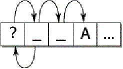

| Version | 1 |
| Authors | Mark Davis (mark.davis@us.ibm.com) |
| Date | 2001-03-11 |
| This Version | http://www.unicode.org/reports/tr29/tr29-1.html |
| Previous Version | n/a |
| Latest Version | http://www.unicode.org/reports/tr29 |
| Tracking Number | 1 |
This document describes guidelines for determining default boundaries between certain significant text elements: grapheme clusters ("user characters"), words, and sentences. For the related line-break boundaries, see UAX #14: Line Breaking Properties.
This document is a proposed draft Unicode Technical Report. Publication does not imply endorsement by the Unicode Consortium. This is a draft document which may be updated, replaced, or superseded by other documents at any time. This is not a stable document; it is inappropriate to cite this document as other than a work in progress.
A list of current Unicode Technical Reports is found on http://www.unicode.org/unicode/reports/. For more information about versions of the Unicode Standard and how to reference this document, see http://www.unicode.org/unicode/standard/versions/.
This document describes guidelines for determining default boundaries between certain significant text elements: grapheme clusters ("user characters"), words, and sentences. It updates most of 5.15 Locating Text Element Boundaries, except for the line-break boundaries, which are covered in UAX #14: Line Breaking Properties.
A string of Unicode-encoded text often needs to be broken up into text elements programmatically. Common examples of text elements include what users think of as characters, words, lines, and sentences. The precise determination of text elements may vary according to locale, even as to what constitutes a character. The goal of matching user perceptions cannot always be met because the text alone does not always contain enough information to unambiguously decide boundaries. For example, the period (U+002E full stop) is used ambiguously, sometimes for end-of-sentence purposes, sometimes for abbreviations, and sometimes for numbers. In most cases, however, programmatic text boundaries can match user perceptions quite closely, or at least not surprise the user.Rather than concentrate on algorithmically searching for text elements themselves, a simpler and more useful computation looks instead at detecting the boundaries between those text elements. The determination of those boundaries is often critical to the performance of general software, so it is important to be able to make such a determination as quickly as possible.
The default boundary determination mechanism provides a straightforward and efficient way to determine some of the most significant boundaries in text: grapheme clusters (what end-users usually think of as characters), words, and sentences. (Line boundaries are to be found in UAX #14: Line Breaking Properties.)
Boundary determination builds upon the uniform character representation of the Unicode Standard, while handling the large number of characters and special features such as combining marks and surrogates in an effective manner. As this mechanism lends itself to a completely data-driven implementation, it can be tailored to particular locales or user preferences without recoding. However, this is a default mechanism; more sophisticated engines can override it for particular locales or environments. For example, Thai line-break or word-break boundaries requires the use of dictionary lookup, analogous to English hyphenation. An implementation therefore may need to provide means to override or subclass the default mechanism described in this document.
The large character set of the Unicode Standard and its representational power place requirements on both the specification of text element boundaries and the underlying implementation. The specification needs to allow for the designation of large sets of characters sharing the same characteristics (for example, uppercase letters), while the implementation must provide quick access and matches to those large sets. The mechanism also must handle special features of the Unicode Standard, such as combining or nonspacing marks, conjoining jamo, and surrogate characters.
A boundary specification defines different classes, then lists the rules for boundaries in terms of those classes. The character classes are specified as a list, where each element of the list is
- A literal character
- A range of characters
- A property of a Unicode character, as defined in the Unicode Character Database
- Boolean combinations of the above
The rules are numbered for reference and are applied in order. That is, there is an implicit “otherwise” at the front of each rule following the first.
Additional notational conventions used in the rules are as follows:
|
÷ |
Allow break here. |
| × | Do not allow break here. |
| => | Treat as if it were. |
An underscore (“_”) is used to indicate a space in examples.
As in other cases, these are a logical descriptions of the processes: implementations can achieve the same results without using code or data that follows these rules step-by-step. In particular, most production-grade implementations will use a state-table approach. In that case, the performance does not depend on the complexity or number of rules. The only feature that does affect performance is the number of characters that may match after the boundary position in a rule that is matched.
Some additional constraints are reflected in the specification. These constraints make the implementation significantly simpler and more efficient and have not been found to be limitations for natural language use.
Editorial Note: The Unicode 3.0 text contained text including more constraints and other descriptions, but that text had fallen out of date, and does not apply to the default boundaries described in this document, nor to UAX #14: Line Breaking Properties.
Different issues are present with different types of boundaries, as the following discussion and examples should make clear.
One or more Unicode characters may make up what the user thinks of as a character or basic unit of the language. To avoid ambiguity with the computer use of the term character, this is called a grapheme cluster. For example, “G” + acute-accent is a grapheme cluster: it is thought of as a single character by users, yet is actually represented by two Unicode code points. For more information on the ambiguity in the term character, see Unicode Technical Report #17, “Character Encoding Model”.
Grapheme clusters include, but are not limited to, combining character sequences such as (g + °), digraphs such as Slovak “ch”, and sequences with letter modifiers such as kw. Grapheme cluster boundaries are important for collation, regular-expressions, and counting “character” positions within text. Word breaks, line breaks and sentence breaks do not occur within a grapheme cluster. In this section, the Unicode Standard provides a determination of where the default grapheme boundaries fall in a string of characters. This algorithm can be tailored for specific locales or other customizations, which is what is done in providing contracting characters in collation tailoring tables.
Note: In previous documentation, default grapheme clusters were previously referred to as "locale-independent graphemes". The term cluster has been added to emphasize that the term grapheme as used differently in linguistics. For simplicity and to align with UTS #10: Unicode Collation Algorithm, the terms default and tailored are used in preference to locale-independent and locale-dependent, respectively.
As far as a user is concerned, the underlying representation of text is not important, but it is paramount that an editing interface present a uniform implementation of what the user thinks of as characters. Grapheme clusters commonly behave as units in terms of mouse selection, arrow key movement, backspacing, and so on. When this is done, for example, and an accented character is represented by a combining character sequence, then using the right arrow key would skip from the start of the base character to the end of the last combining character. In some cases, particularly for spacing combining marks, editing a grapheme cluster element by element may be the preferred way. In those rare circumstances where end-users need character counts, the counts need to correspond to the grapheme cluster boundaries.
The principal requirements for default grapheme cluster boundaries are the handling of combining marks, Hangul conjoining jamo, and Indic and Tibetan character clusters. Boundaries may be further tailored for requirements of different languages, such as the addition of “ch” for Slovak. For the rules defining the default boundaries, see Table 1, Default Grapheme Cluster Boundaries below.
Table 1. Default Grapheme Cluster Boundaries
| sot | Start of Text |
| eot | End of Text |
| CR | Carriage Return |
| LF | Line Feed |
| Control | Line Separator, Paragraph Separator or General Category = Control |
| CGJ | Combining Grapheme Joiner |
| Link | Grapheme_Link, as determined by the UCD. Includes
most viramas but not the CGJ. |
| Extend | Grapheme_Extend, as determined by the UCD. Includes
combining marks (except for the CGJ and Link) and format controls. |
| Base | Grapheme_Base, as determined by the UCD. Note: includes
L, V, T, LV, LVT. |
| LetterBase | General Category = Letter |
| L | Hangul leading jamo: U+1100..U+115F |
| V | Hangul vowel jamo: U+1160..U+11A2 |
| T | Hangul trailing jamo: U+11A8..U+11F9 |
| LV | Precomposed Hangul syllable that is canonically equivalent to a sequence of <L,V> |
| LVT | Precomposed Hangul syllable that is canonically equivalent to a sequence of <L,V,T> |
| Any | Any character (includes all of the above except sot and eot) |
|
Break before the start of text and after the end. |
|||
| ÷ | sot | (1) | |
| eot | ÷ | (2) | |
|
Do not break between a CR and LF. Otherwise break before and after controls. |
|||
| CR | × | LF | (3) |
| Control | ÷ | (4) | |
| ÷ | Control | (5) | |
|
Do not break Hangul syllable sequences. |
|||
| L | × | ( L | V | LV | LVT ) | (6) |
| ( LV | V ) | × | ( V | T ) | (7) |
| ( LVT | T) | × | T | (8) |
|
Don't break before extending characters. |
|||
| × | Extend | (9) | |
|
Do not break around a CGJ. |
|||
| CGJ | × | Base | (10) |
| × | CGJ | (11) | |
|
Do not break between linking characters and letters, or before linking characters. This provides for Indic graphemes, where virama (halant) will link character clusters together. |
|||
| Link Extend* | × | LetterBase | (12) |
| × | Link | (13) | |
|
Otherwise break after all characters. |
|||
| Any | ÷ | (14) | |
A default grapheme cluster normally begins with a base character. Exceptions include when a combining mark is at the start of text, or it is preceded by a control or format character. Except for the Extend characters, the boundary of a default grapheme cluster can be determined by just the adjacent characters. As in LineBreak, it only requires a minor modification for programs to skip over the Extend characters where required.
For more information on the composition of Hangul Syllables (with L, V, or T) see 3.11 Conjoining Jamo Behavior (revision) in UAX #28: Unicode Version 3.2.
Degenerate Cases. As with other definitions in Chapter 5 and
elsewhere, such definitions are designed to be simple to implement. They need
to provide an algorithmic determination of the valid, default grapheme
clusters, and exclude sequences that are normally not considered default
grapheme clusters. However, they do not have to catch edge cases that
will not occur in practice. Mismatched sequences such as <DEVANAGARI
KA, COMBINING GRAPHEME JOINER, HANGUL JONGSEONG YEORINHIEUH, COMBINING
ACUTE> may end up being characterized as a single default grapheme
cluster, but it is not worth the extra complications in the definition that
would be required to catch all of these cases, because they will not occur in
practice.
The definition of default grapheme clusters is not meant to exclude the use of more sophisticated definitions of tailored grapheme clusters where appropriate: definitions that more precisely match the user expectations within individual languages. For example, “ch” may be considered a grapheme cluster in Slovak. It is, however, designed to provide a much more accurate match to overall user expectations for characters than is provided by individual Unicode code points.
Display of Grapheme Clusters. Grapheme clusters are not the same as ligatures. For example, the grapheme cluster “ch” in Slovak is not normally a ligature, and conversely, the ligature “fi” is not normally a grapheme cluster. Default grapheme clusters do not necessarily reflect text display. For example, the sequence <f, i> may be displayed as a single glyph on the screen, but would still be two grapheme clusters.
For more information on the use of grapheme clusters, see Unicode Technical Report #18, “Unicode Regular Expression Guidelines”.
| Issue: We need to get feedback from Thai/Lao experts on whether
we should add clusters for those languages, by adding a rule:
Logical_Order_Exception × Base and adding additional characters to the Extend class. |
Word boundaries are used in a number of different contexts. The most familiar ones are double-click mouse selection, “move to next word,” and "Whole Word Search" (WWS) for search and replace. They are also used in database queries, to determine whether elements are within a certain number of words of one another.
Word boundaries can also be used in so-called intelligent cut and paste. With this feature, if the user cuts a piece of text on word boundaries, adjacent spaces are collapsed to a single space. For example, cutting “quick” from “The_quick_fox” would leave “The_ _fox”. Intelligent cut and paste collapses this text to “The_fox”.
The word boundaries are related to the line boundaries, but are distinct. Here is an example of word boundaries.
| The | quick | ( | " | brown | " | ) | fox | can't | jump | 32.3 | feet | , | right | ? |
There is a boundary, for example, on either side of the word brown. These are the boundaries that users would expect, for example, if they chose WWS. Matching brown with WWS works, since there is a boundary on either side. Matching brow doesn't. Matching "brown" also works, since there are boundaries between the parentheses and the quotation marks.
For proximity tests, one sees whether, for example, "monster" is within 3 words of "truck". That is done with the above boundaries by ignoring any words that contain a letter (or digit: whether or not digits are included is task-specific). Thus for proximity we get the following, so "fox" is within three words of "quick".
| The | quick | brown | fox | can't | jump | 32.3 | feet | right |
There are other cases where the characters between given boundaries are ignored, based on the types of characters.
Note: As with the other default specifications, implementations are free to override (tailor) the results to meet the requirements of different environments or particular languages.
Table 5-4. Default Word Boundaries
| sot | Start of Text |
| eot | End of Text |
| Hiragana | General_Category = Letter AND Script = HIRAGANA |
| Katakana | General_Category = Letter AND Script = KATAKANA |
| Letter | (General_Category = Letter OR General_Category = Modifier_Symbol) AND ¬ (Line_Break = Ideographic OR Hiragana OR Katakana) |
| MidLetter | U+0027 (') apostrophe, U+2019 (’) curly apostrophe, U+003A (:) colon (used in Swedish), U+0029 (.) period, U+00AD () soft hyphen, U+05F3 (׳) geresh, U+05F4 (״) gershayim |
| other | Other categories are from Line_Break (using the long names from PropertyAliases |
|
Treat a grapheme cluster as if it were a single character: the first base character, if there is one; otherwise the first character. |
|||
|
GC => FB |
(1) | ||
|
Don't break between most letters |
|||
| Letter | × | Letter | (2) |
|
Don’t break letters across certain punctuation |
|||
| Letter | × | MidLetter Letter | (3) |
| Letter MidLetter | × | Letter | (4) |
|
Don’t break within sequences of digits, or digits adjacent to letters. |
|||
| Numeric | × | Numeric | (5) |
| Letter | × | Numeric | (6) |
| Numeric | × | Letter | (7) |
|
Don’t break within sequences like: '-3.2' |
|||
| Hyphen | × | Numeric | (8) |
| Numeric Infix_Numeric | × | Numeric | (9) |
| Numeric | × | Infix_Numeric Numeric | (10) |
| Prefix_Numeric | × | Numeric | (11) |
| Numeric | × | Postfix_Numeric | (12) |
|
Don't break between Hiragana or Katakana |
|||
| Hiragana | × | Hiragana | (13) |
| Katakana | × | Katakana | (14) |
|
Otherwise, break everywhere (including around ideographs) |
|||
| Any | ÷ | (15) | |
| ÷ | Any | (16) | |
Unfortunately we cannot resolve all of the issues across languages (or even within a language, since there are ambiguities). The goal is to have as workable a default as we can; tailored engines can be more sophisticated about these matters.
Thai is a case where, as in LineBreak, a good implementation should not just depend on the default word boundary specification, but should use a more sophisticated mechanism. There must be some default, however, in the absence of such a mechanism. The above treats any sequence of Thai letters as a single word, depending on the (logical or physical) insertion of ZWSP to break up the words.
The hard hyphen is a tricky case. It is quite common for separate words to be connected with a hyphen: out-of-the-box, under-the-table, Anglo-american, etc. A significant number are hyphenated names: Smith-Hawkins, etc. When people do a "Whole Word" search or query, they expect to find the word within those hyphens. While there are some cases where they are separate words (usually to resolve some ambiguity such as re-sort vs. resort) it's better overall to keep the hard hyphen out of the default definition.
Apostrophe is another one. Usually considered part of one word ("can't", "aujourd'hui") it may also be considered two ("l'objectif"). Also, one cannot easily distinguish the cases where it is used as a quotation mark from those where it is used as an apostrophe, so one should not include leading or trailing apostrophes. In some languages, such as French, tailoring it to break words may yield better results in more cases.
Certain cases like colon in words (c:a) are included even though they may be specific to relatively small user communities (Swedish) because they don't occur otherwise in normal text, and so don't cause a problem for other languages.
| Issue: Would a better default for Thai/Lao be treating them as breaking on grapheme cluster boundaries? |
Sentence boundaries are often used for triple-click or some other method of selecting or iterating through blocks of text that are larger than single words. They is also used to determine whether words occur within the same sentence in database queries.
Plain text provides inadequate information for determining good sentence boundaries. Periods, for example, can either signal the end of a sentence, indicate abbreviations, or be used for decimal points. Remember that these are, like the others, default boundaries, and may be tailored. One cannot, without much more sophisticated analysis, distinguish between cases like:
He said, "Are you going?" Mr. Smith shook his head.
"Are you going?" Mr. Smith asked.
Without analyzing the text semantically, it is impossible to be certain which of these usages is intended (and sometimes ambiguities still remain).
Table 5-6. Default Sentence Boundaries
| CR | Carriage Return |
| LF | Linefeed |
| Sep | CR | LF | NEL | LS | PS |
| Sp | Whitespace - Sep |
| Term | Terminal_Punctuation1 OR Terminal_Punctuation2 |
| ATerm | Terminal_Punctuation2 |
| Lower | Lowercase OR General_Category = Letter OR General_Category = Modifier_Symbol |
| Upper | Uppercase | General_Category = Titlecase_Letter |
| Open | General_Category = Open_Punctuation |
|
Treat a grapheme cluster as if it were a single character: the first base character, if there is one; otherwise the first character. |
|||
|
GC => FB |
(1) | ||
|
Don't break CRLF; otherwise break after paragraph separators |
|||
| CR | × | LF | (2) |
| Sep | ÷ | (3) | |
|
Don't break after ambiguous terminators like period if the first following letter is lowercase, or if the preceding word is contains an uppercase letter. For example, a period may be an abbreviation or numeric period, and not mark the end of a sentence. |
|||
| ATerm Close* Sp* {Sep} | × | ( ¬Letter )* Lowercase | (4) |
| Upper Lower* ATerm Close* Sp* {Sep} | × | (5) | |
|
Break after sentence terminators, but include closing punctuation, trailing spaces, and (optionally) a paragraph separator. |
|||
| Term Close* Sp* {Sep} | ÷ | (6) | |
| Issue: We have to determine the contents of the
different useful subsets of the Terminal_Punctuation property in the
Unicode Character Database, so that the default rules are applicable to
as many scripts and languages as possible. As described above, more
sophisticated engines can override the default approach for any given
language, to come closer to user expectations.
The following is a rough initial cut. Terminal_Punctuation1: characters that definitely ends sentences. 0021 ; Terminal_Punctuation # Po EXCLAMATION MARK 003F ; Terminal_Punctuation # Po QUESTION MARK 037E ; Terminal_Punctuation # Po GREEK QUESTION MARK 061F ; Terminal_Punctuation # Po ARABIC QUESTION MARK 06D4 ; Terminal_Punctuation # Po ARABIC FULL STOP 203C..203D ; Terminal_Punctuation # Po [2] DOUBLE EXCLAMATION MARK..INTERROBANG 3002 ; Terminal_Punctuation # Po IDEOGRAPHIC FULL STOP 2048..2049 ; Terminal_Punctuation # Po [2] QUESTION EXCLAMATION MARK..EXCLAMATION QUESTION MARK Terminal_Punctuation2: characters that could be part of an abbreviation or end a sentence. 002E ; Terminal_Punctuation # Po FULL STOP 0589 ; Terminal_Punctuation # Po ARMENIAN FULL STOP 3001 ; Terminal_Punctuation # Po IDEOGRAPHIC COMMA Terminal_Punctuation3: characters irrelevant to sentence boundaries 002C ; Terminal_Punctuation # Po COMMA 003A..003B ; Terminal_Punctuation # Po [2] COLON..SEMICOLON 0387 ; Terminal_Punctuation # Po GREEK ANO TELEIA 060C ; Terminal_Punctuation # Po ARABIC COMMA 061B ; Terminal_Punctuation # Po ARABIC SEMICOLON Not yet determined 0700..070A ; Terminal_Punctuation # Po [11] SYRIAC END OF PARAGRAPH..SYRIAC CONTRACTION 070C ; Terminal_Punctuation # Po SYRIAC HARKLEAN METOBELUS 0964..0965 ; Terminal_Punctuation # Po [2] DEVANAGARI DANDA..DEVANAGARI DOUBLE DANDA 0E5A..0E5B ; Terminal_Punctuation # Po [2] THAI CHARACTER ANGKHANKHU..THAI CHARACTER KHOMUT 104A..104B ; Terminal_Punctuation # Po [2] MYANMAR SIGN LITTLE SECTION..MYANMAR SIGN SECTION 1361..1368 ; Terminal_Punctuation # Po [8] ETHIOPIC WORDSPACE..ETHIOPIC PARAGRAPH SEPARATOR 166D..166E ; Terminal_Punctuation # Po [2] CANADIAN SYLLABICS CHI SIGN..CANADIAN SYLLABICS FULL STOP 16EB..16ED ; Terminal_Punctuation # Po [3] RUNIC SINGLE PUNCTUATION..RUNIC CROSS PUNCTUATION 17D4..17D6 ; Terminal_Punctuation # Po [3] KHMER SIGN KHAN..KHMER SIGN CAMNUC PII KUUH 17DA ; Terminal_Punctuation # Po KHMER SIGN KOOMUUT 1802..1805 ; Terminal_Punctuation # Po [4] MONGOLIAN COMMA..MONGOLIAN FOUR DOTS 1808..1809 ; Terminal_Punctuation # Po [2] MONGOLIAN MANCHU COMMA..MONGOLIAN MANCHU FULL STOP
|
A further complication is introduced by random access. When iterating through a string from beginning to end, the above mechanism works well. It guarantees a limited context, and it allows a fresh start at each boundary to find the next boundary. By constructing a state table for the reverse direction from the same specification of the rules, reverse searches are possible. However, suppose that the user wants to iterate starting at a random point in the text. If the starting point does not provide enough context to allow the correct set of rules to be applied, then one could fail to find a valid boundary point. For example, suppose a user clicked after the first space in “?_ _A”. On a forward iteration searching for a sentence boundary, one would fail to find the boundary before the “A”, because the “?” hadn’t been seen yet.
A second set of rules to determine a “safe” starting point provides a solution. Iterate backward with this second set of rules until a safe starting point is located, then iterate forward from there. Iterate forward to find boundaries that were located between the safe point and the starting point; discard these. The desired boundary is the first one that is not less than the starting point.

This process would represent a significant performance cost if it had to be performed on every search. However, this functionality could be wrapped up in an iterator object, which preserves the information regarding whether it currently is at a valid boundary point. Only if it is reset to an arbitrary location in the text is this extra backup processing performed.
| [FAQ] | Unicode Frequently Asked Questions http://www.unicode.org/unicode/faq/ For answers to common questions on technical issues. |
| [Glossary] | Unicode Glossary http://www.unicode.org/glossary/ For explanations of terminology used in this and other documents. |
| [Reports] | Unicode Technical Reports http://www.unicode.org/unicode/reports/ For information on the status and development process for technical reports, and for a list of technical reports. |
| [U3.1] | Unicode Standard Annex #27: Unicode 3.1 http://www.unicode.org/unicode/reports/tr27/ |
| [Versions] | Versions of the Unicode Standard http://www.unicode.org/unicode/standard/versions/ For details on the precise contents of each version of the Unicode Standard, and how to cite them. |
The following summarizes modifications from the previous version of this document.
| 6 | Combined revision proposals into single document. |
Copyright © 2000 Unicode, Inc. All Rights Reserved. The Unicode Consortium makes no expressed or implied warranty of any kind, and assumes no liability for errors or omissions. No liability is assumed for incidental and consequential damages in connection with or arising out of the use of the information or programs contained or accompanying this technical report.
Unicode and the Unicode logo are trademarks of Unicode, Inc., and are registered in some jurisdictions.